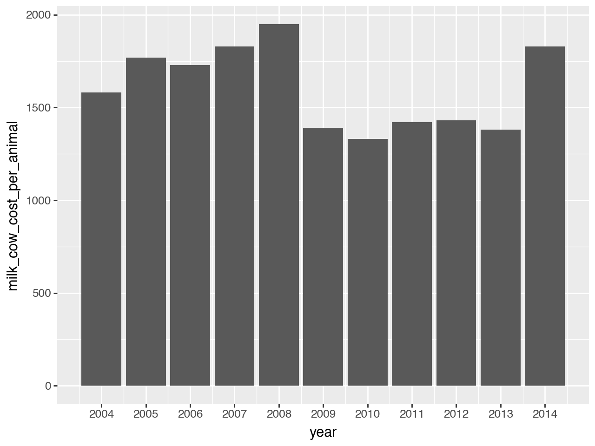
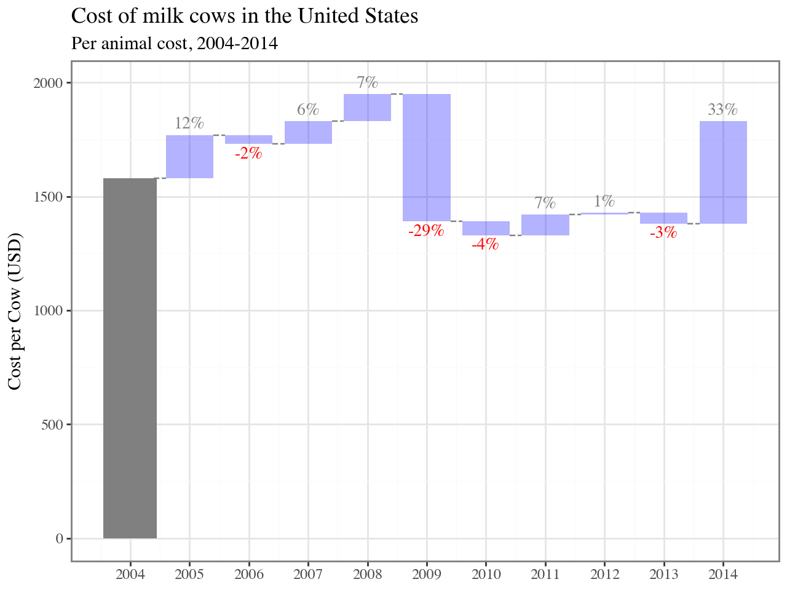

import pandas as pd
import plotnine as p9
cows = pd.read_csv("milkcow_facts.csv").query('year>=2004')This makes a plot of the milk cow cost per head over year, but makes it a waterfall plot.
cows.head()| year | avg_milk_cow_number | milk_per_cow | milk_production_lbs | avg_price_milk | dairy_ration | milk_feed_price_ratio | milk_cow_cost_per_animal | milk_volume_to_buy_cow_in_lbs | alfalfa_hay_price | slaughter_cow_price | |
|---|---|---|---|---|---|---|---|---|---|---|---|
| 24 | 2004.0 | 9010000.0 | 18960 | 1.708320e+11 | 0.161 | 0.052007 | 3.10 | 1580 | 9813.664596 | 95.133333 | 0.5266 |
| 25 | 2005.0 | 9050000.0 | 19550 | 1.769310e+11 | 0.151 | 0.046825 | 3.24 | 1770 | 11721.854305 | 102.525000 | 0.5394 |
| 26 | 2006.0 | 9137000.0 | 19895 | 1.817820e+11 | 0.129 | 0.050371 | 2.57 | 1730 | 13410.852713 | 107.708333 | 0.4908 |
| 27 | 2007.0 | 9189000.0 | 20204 | 1.856540e+11 | 0.191 | 0.067958 | 2.80 | 1830 | 9581.151832 | 130.583333 | 0.4951 |
| 28 | 2008.0 | 9314000.0 | 20397 | 1.899780e+11 | 0.183 | 0.091663 | 2.01 | 1950 | 10655.737705 | 161.333333 | 0.5144 |
cows['milk_cow_cost_per_animal_lag'] = cows['milk_cow_cost_per_animal'].shift(1)
cows['percent_change'] = cows['milk_cow_cost_per_animal']/cows['milk_cow_cost_per_animal_lag'] - 1
cows| year | avg_milk_cow_number | milk_per_cow | milk_production_lbs | avg_price_milk | dairy_ration | milk_feed_price_ratio | milk_cow_cost_per_animal | milk_volume_to_buy_cow_in_lbs | alfalfa_hay_price | slaughter_cow_price | milk_cow_cost_per_animal_lag | percent_change | |
|---|---|---|---|---|---|---|---|---|---|---|---|---|---|
| 24 | 2004.0 | 9010000.0 | 18960 | 1.708320e+11 | 0.161 | 0.052007 | 3.10 | 1580 | 9813.664596 | 95.133333 | 0.526600 | NaN | NaN |
| 25 | 2005.0 | 9050000.0 | 19550 | 1.769310e+11 | 0.151 | 0.046825 | 3.24 | 1770 | 11721.854305 | 102.525000 | 0.539400 | 1580.0 | 0.120253 |
| 26 | 2006.0 | 9137000.0 | 19895 | 1.817820e+11 | 0.129 | 0.050371 | 2.57 | 1730 | 13410.852713 | 107.708333 | 0.490800 | 1770.0 | -0.022599 |
| 27 | 2007.0 | 9189000.0 | 20204 | 1.856540e+11 | 0.191 | 0.067958 | 2.80 | 1830 | 9581.151832 | 130.583333 | 0.495100 | 1730.0 | 0.057803 |
| 28 | 2008.0 | 9314000.0 | 20397 | 1.899780e+11 | 0.183 | 0.091663 | 2.01 | 1950 | 10655.737705 | 161.333333 | 0.514400 | 1830.0 | 0.065574 |
| 29 | 2009.0 | 9202000.0 | 20561 | 1.892020e+11 | 0.128 | 0.072685 | 1.78 | 1390 | 10859.375000 | 122.916667 | 0.443767 | 1950.0 | -0.287179 |
| 30 | 2010.0 | 9123000.0 | 21142 | 1.928770e+11 | 0.163 | 0.072030 | 2.26 | 1330 | 8159.509202 | 116.416667 | 0.561000 | 1390.0 | -0.043165 |
| 31 | 2011.0 | 9199000.0 | 21334 | 1.962550e+11 | 0.201 | 0.107560 | 1.90 | 1420 | 7064.676617 | 176.083333 | 0.683000 | 1330.0 | 0.067669 |
| 32 | 2012.0 | 9237000.0 | 21722 | 2.006420e+11 | 0.185 | 0.121500 | 1.52 | 1430 | 7729.729730 | 206.083333 | 0.777100 | 1420.0 | 0.007042 |
| 33 | 2013.0 | 9224000.0 | 21816 | 2.012310e+11 | 0.201 | 0.117092 | 1.75 | 1380 | 6865.671642 | 205.830000 | 0.775600 | 1430.0 | -0.034965 |
| 34 | 2014.0 | 9257000.0 | 22259 | 2.060540e+11 | 0.240 | 0.095100 | 2.54 | 1830 | 7625.000000 | 200.250000 | 1.020400 | 1380.0 | 0.326087 |
Start with a simple barplot to visualize the data
(
p9.ggplot(cows)
+ p9.aes(x='year', y='milk_cow_cost_per_animal')
+ p9.geom_bar(stat='identity')
+ p9.scale_x_continuous(breaks=cows.year.tolist())
)
(
p9.ggplot(cows)
# Main waterfall
+ p9.aes(xmin='year-0.4', xmax='year + 0.4', ymax='milk_cow_cost_per_animal', ymin='milk_cow_cost_per_animal_lag')
+ p9.geom_rect(fill='blue', alpha=0.3)
+ p9.scale_x_continuous(breaks=cows.year.tolist())
+ p9.geom_col(data=cows[cows.year==2004], mapping=p9.aes(x='year', y='milk_cow_cost_per_animal'), fill='grey')
# Dashed lines between
+ p9.geom_segment(
data = cows[cows.year < 2014],
mapping=p9.aes(x='year+0.4', xend='year+0.6', y='milk_cow_cost_per_animal', yend='milk_cow_cost_per_animal'),
linetype = "dashed", color = "grey")
+ p9.theme_bw(base_family = "Times")
# The % annotations
+ p9.geom_text(
data=cows.dropna(),
mapping = p9.aes(
y = 'milk_cow_cost_per_animal',
x = 'year',
color = (cows.dropna().percent_change > 0),
label=[f'{p:.0%}' for p in cows.dropna().percent_change]),
size = 10,
nudge_y = [45 if p > 0 else -45 for p in cows.dropna().percent_change],
show_legend = False)
+ p9.scale_color_manual(values = ("red", "grey"))
# titles
+ p9.labs(x="", y="Cost per Cow (USD)", title = "Cost of milk cows in the United States", subtitle = "Per animal cost, 2004-2014")
)/Users/damienmartin/anaconda3/envs/blog/lib/python3.12/site-packages/plotnine/layer.py:364: PlotnineWarning: geom_rect : Removed 1 rows containing missing values.